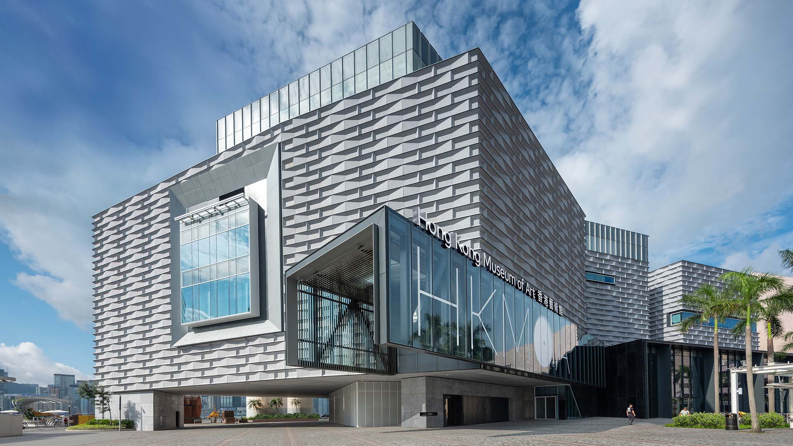
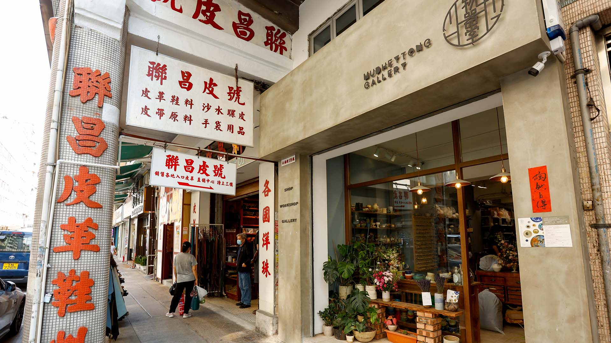

Hong Kong has undergone an art renaissance in the past decade, with the influx and inception of international and
home-grown art spaces all around town, clustered in and around the storied neighbourhoods of Central, Sham Shui Po, as
well as the newly developed West Kowloon Cultural District. A renewed appreciation of the city’s origins and way of life
is expressed through the celebration of local traditions and culture, as the population becomes increasingly
introspective and retrospective. If you’re looking to expand your horizons or immerse yourself in the multi-faceted
world of arts and culture this year, here are the best ways to do so.
HK Museum of Art
The Hong Kong Museum of Art was established in 1962 and is the city’s first public art museum. Through the years, the HKMoA has amassed a fantastic
collection of works spanning their four main areas of interest: Chinese antiquities, modern and local Hong Kong art,
Chinese painting and calligraphy, and China trade art, with a collection of over 17,000 items.

HK Palace Museum
The Hong Kong Palace Museum is a collaborative project between the West Kowloon Cultural District Authority and the
Palace Museum, committed to the study and appreciation of Chinese art and culture, while advancing dialogue among world
civilisations through international partnerships. The museum will present the finest objects from the Palace Museum and
other important cultural institutions around the world.
K11 MUSEA
K11 MUSEA is a pioneering cultural-retail landmark located on the Victoria Dockside harbourfront area of Tsim Sha Tsui.
Besides offering high-end designer goods and exceptional dining outlets, the complex also hosts immersive experiences in
world-class art, culture, nature, and commerce. Art is an integral part of the landmark — it is not uncommon to see
large-scale installations in the middle of a walkway or mounted on a side wall.
Tai Nan Street and nearby
Sham Shui Po was filled with factories and workshops during HK’s manufacturing era, but has now transformed into
an artistic community filled with cultural and creative spaces. Tai Nan Street, in particular, is a bustling hub of
exciting hybrid concepts and artist-led initiatives. Head to Mudheytong Gallery for an immersion into the craftsmanship
of ceramic arts, and sign up for a pottery class to learn new artistic skills..
